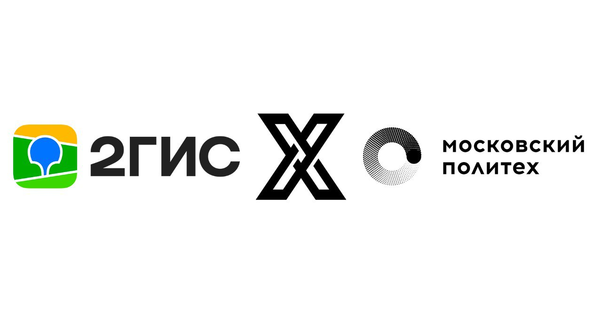

О проекте

Создание 3D-карты ВУЗа
Целью проекта является создание интерактивной 3D-карты всех корпусов Московского политеха и дальнейшей её интеграции в сервис 2ГИС. Благодаря этому студенты и преподователи смогут с легкостью находить нужный им кабинет.
Этапы реализации проекта: обсуждение, замер помещений, перенос в 3D-вид, интеграция в приложение.
3D-карта будет доступна в приложении 2ГИС.
Цели проекта
- Улучшение навигации по ВУЗу
- Современная визуализация инфраструктуры
- Интеграция с популярным сервисом 2ГИС